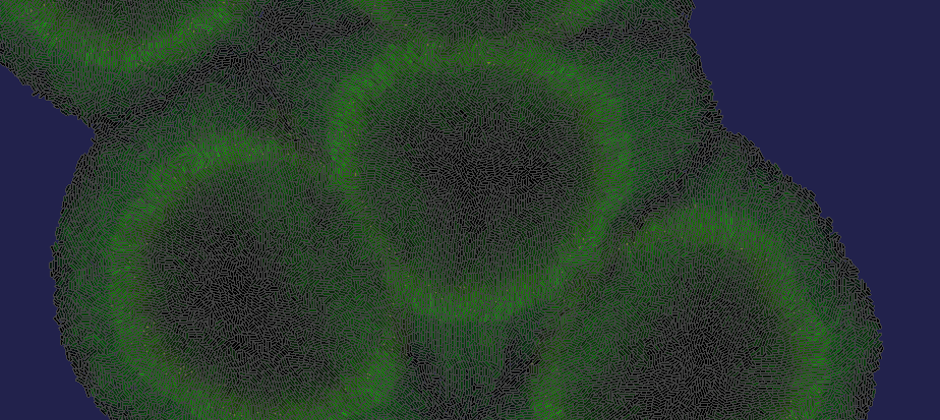
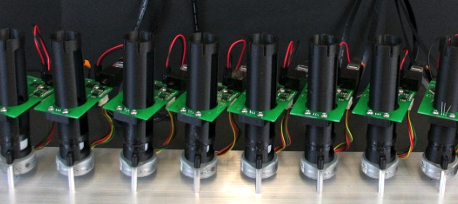
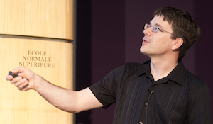

Multicellular
Design

Synthetic
State

Gene Circuit
Characterization

Protocols
as Code

Continuous
Culture

Self Organizing
Systems
About

Eric Klavins, Associate Professor
The Klavins lab develops synthetic living systems, re-engineered organisms, and engineered parts for existing organisms. Our particular emphasis is on designing gene circuits and cell-cell communication systems that enable novel multicellular behaviors in bacteria or yeast. We take an engineering approach to this challenge, and are interested in the whole pathway from modeling and design of new systems to fabrication and testing of new living systems.
News
8/2014:
Klavins lab alum Nils Napp is now an assistant professor at SUNY Buffalo. Congratulations on the new position, Nils!
8/2014:
Shelly Jang successfully defended her Ph.D. thesis entitled Parameter-Component Dependency: Identifying the Biological Functions of Interchangeable Genetic Components and is getting ready to start her new job at ATT. Congratulations Shelly!
4/2014:
Congratulations to Sunny Rao, who has won an NSF Graduate Fellowship for 2014!!!
3/2014:
The Klavins Lab bids farewell to Kevin Oishi, who has successfully defended and is starting a new position at Intellectual Ventures. Good luck Kevin! Come visit us often!
2/2014:
Jeantine Lunshof, philosopher and bioethicist, will speak at the Future Synthetic Biology Discussion Series Feb. 27 at noon in 2nd floor conference room of MolES.
Open Positions
We have positions available for postdoctoral scholars, graduate students, a programmer, a system administrator, and undergraduate assistants. See here for more information.
Contact Info
Address
- Klavins Lab
- University of Washington
- Campus Box 352500
- Seattle, WA 98195
- (206) 616-1743


{kind=link}